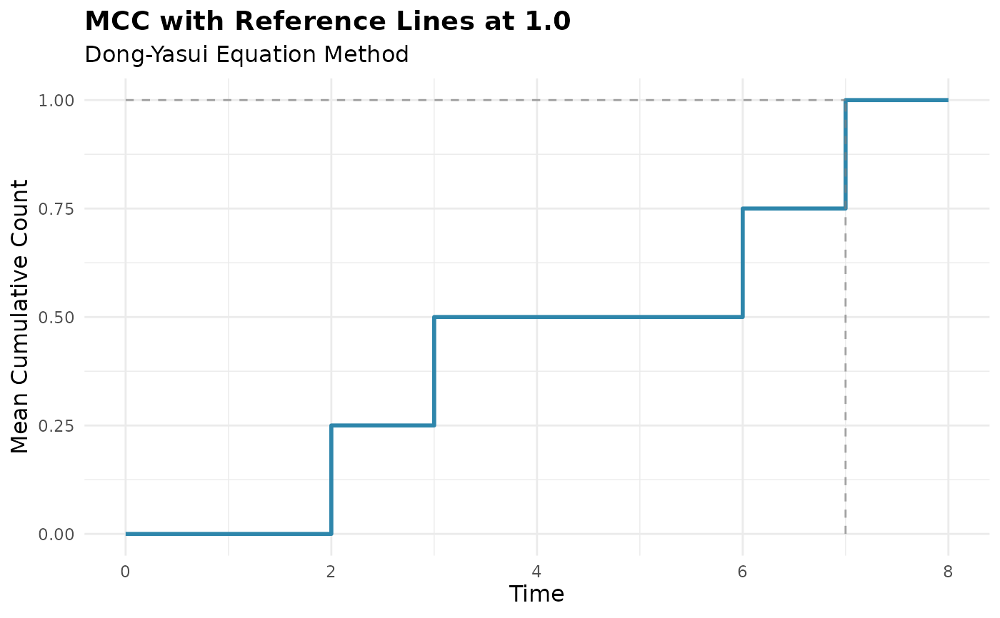
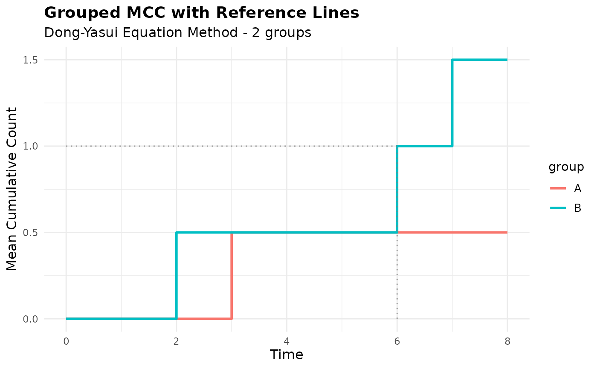

Adds horizontal and vertical reference lines to mark when the Mean Cumulative
Count (MCC) reaches the threshold. This function returns a list of ggplot2
geoms that can be added to existing plots using the + operator. For
grouped analyses, it creates separate reference lines for each group.
Usage
geom_line_mcc(
mcc_object,
threshold = 1,
linetype = 2,
color = NULL,
alpha = 0.7,
linewidth = 0.5,
show_labels = FALSE,
label_size = 3,
label_nudge_x = 0,
label_nudge_y = 0.05
)Arguments
- mcc_object
An object of class
mcccontaining MCC estimates.- threshold
numeric;determines MCC value threshold to use (default =
1.0)- linetype
Line type for the reference lines. Default is
2(dashed). Can be numeric (1-6) or character ("solid", "dashed", "dotted", etc.).- color
Color for the reference lines. If
NULL(default), uses gray.- alpha
Transparency level for the reference lines. Default is
0.7.- linewidth
Width of the reference lines. Default is
0.5.- show_labels
Logical indicating whether to add text labels at the intersection points. Default is
FALSE.- label_size
Size of the text labels if
show_labels = TRUE. Default is3.- label_nudge_x
Horizontal offset for labels. Default is
0.- label_nudge_y
Vertical offset for labels. Default is
0.05.
Details
This function identifies the time when MCC first reaches or exceeds the
specified MCC threshold. It then creates:
A horizontal line from x = 0 to the time when MCC =
thresholdA vertical line from y = 0 to MCC =
thresholdat that time point
For grouped analyses, separate reference lines are created for each group
that reaches MCC = threshold. Groups that never reach MCC = threshold
will not have reference lines added.
The function is designed to work seamlessly with the existing plot.mcc()
method and can be chained using ggplot2's + syntax.
Examples
# Create sample data
library(dplyr)
df <- data.frame(
id = c(1, 2, 3, 4, 4, 4, 4, 5, 5),
time = c(8, 1, 5, 2, 6, 7, 8, 3, 3),
cause = c(0, 0, 2, 1, 1, 1, 0, 1, 2),
group = c("A", "A", "B", "B", "B", "B", "B", "A", "A")
) |>
arrange(id, time)
# Ungrouped analysis
mcc_overall <- mcc(df, "id", "time", "cause")
#> ℹ Adjusted time points for events occurring simultaneously for the same subject.
# Basic plot with reference lines
plot(mcc_overall) +
geom_line_mcc(mcc_overall) +
labs(title = "MCC with Reference Lines at 1.0")

# Grouped analysis
mcc_grouped <- mcc(df, "id", "time", "cause", by = "group")
#> ℹ Adjusted time points for events occurring simultaneously for the same subject.
# Plot with group-specific reference lines
plot(mcc_grouped) +
geom_line_mcc(mcc_grouped, linetype = "dotted", alpha = 0.8) +
labs(title = "Grouped MCC with Reference Lines")

# With labels
plot(mcc_overall) +
geom_line_mcc(mcc_overall, show_labels = TRUE, color = "red") +
labs(title = "MCC with Labeled Reference Lines")
 # Clean up
rm(df, mcc_overall, mcc_grouped)
# Clean up
rm(df, mcc_overall, mcc_grouped)